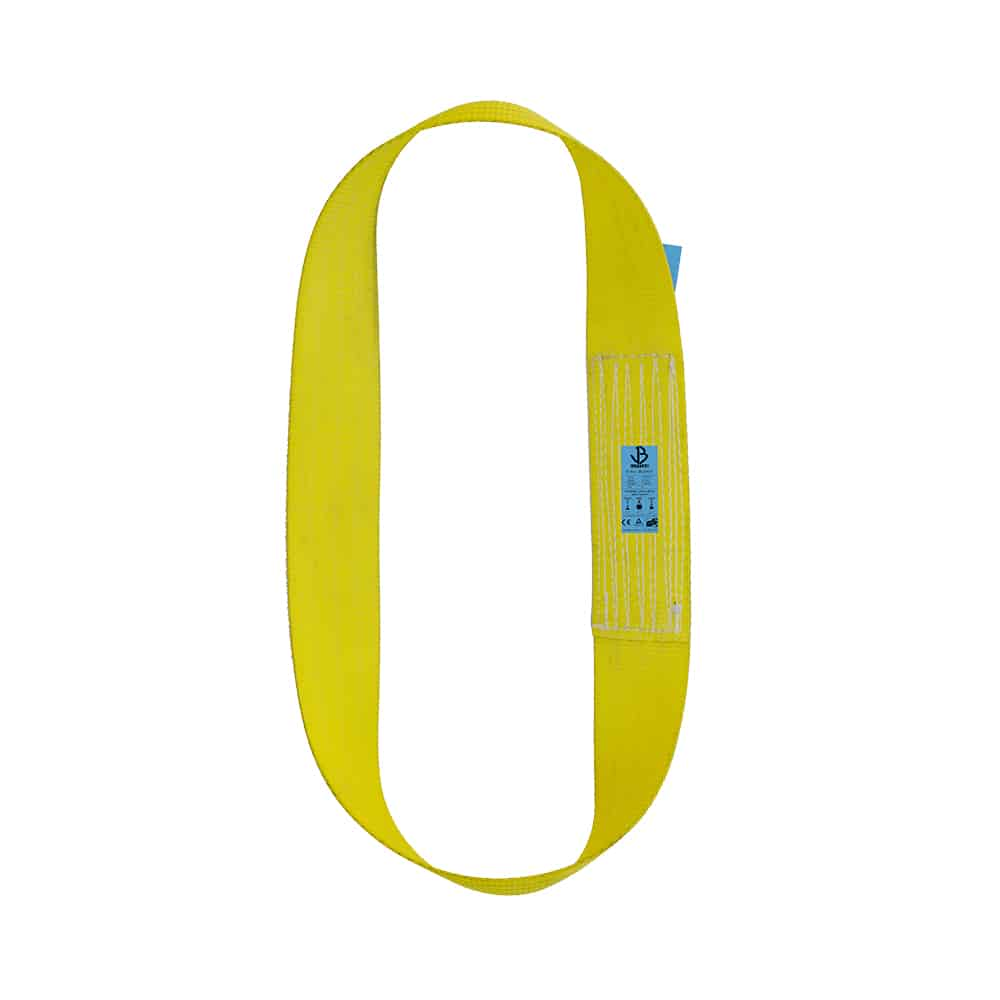
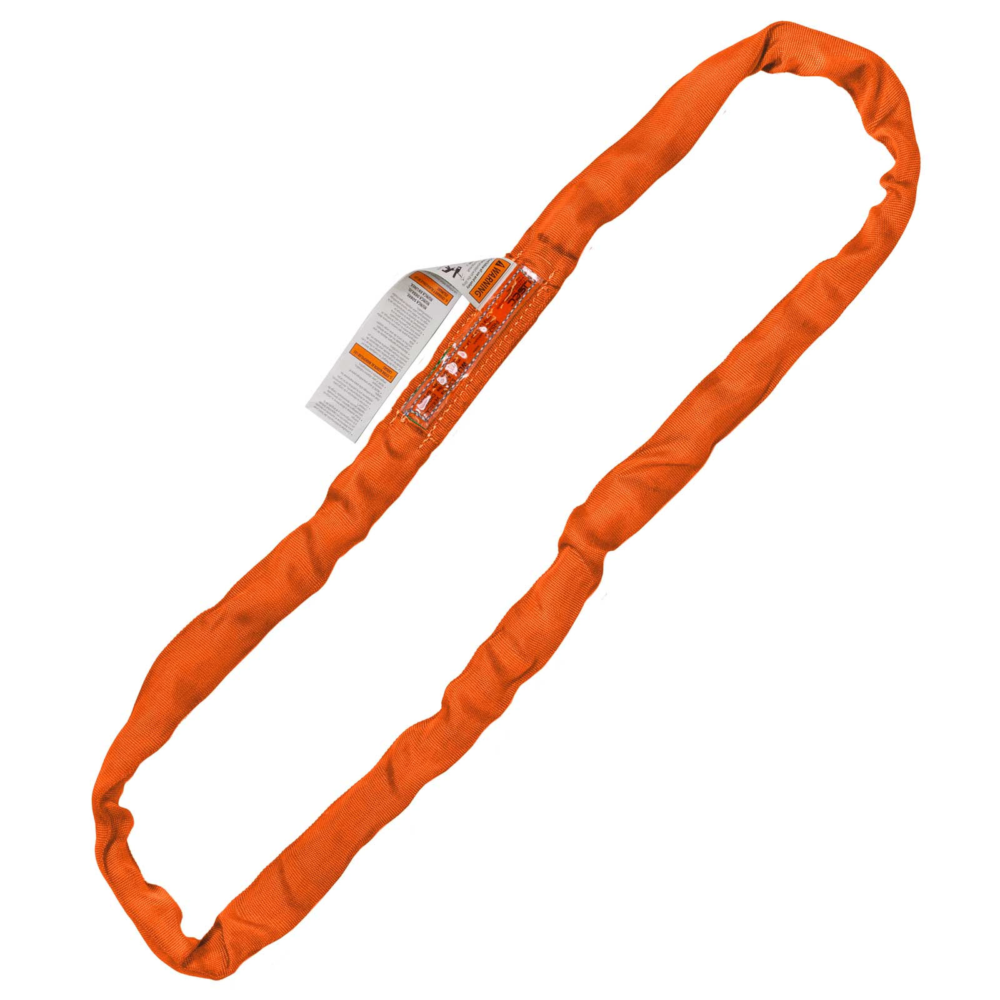
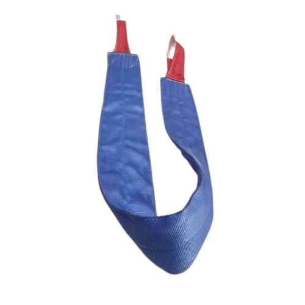
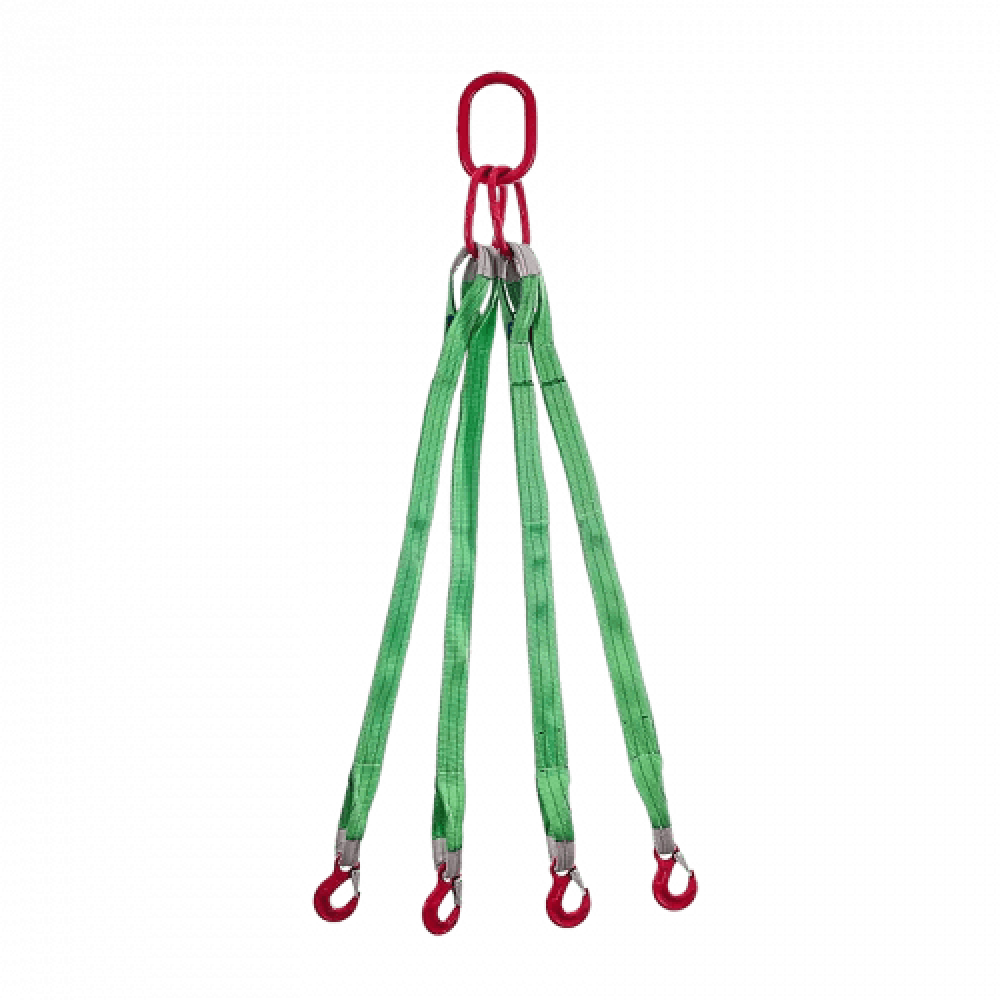
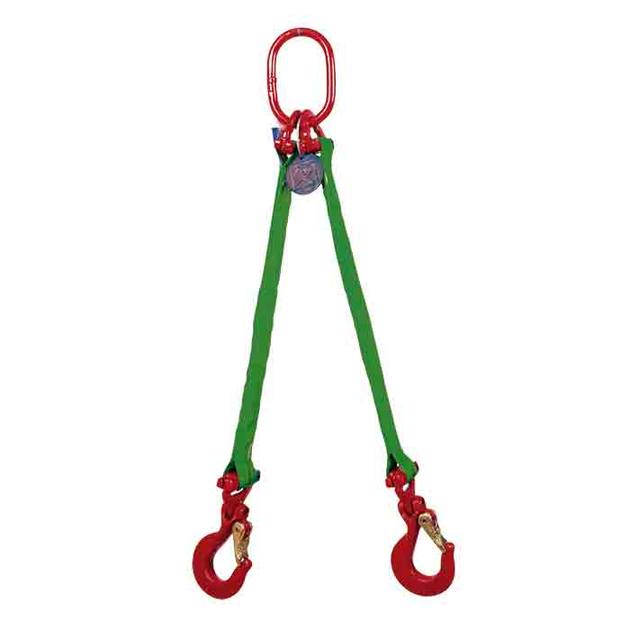
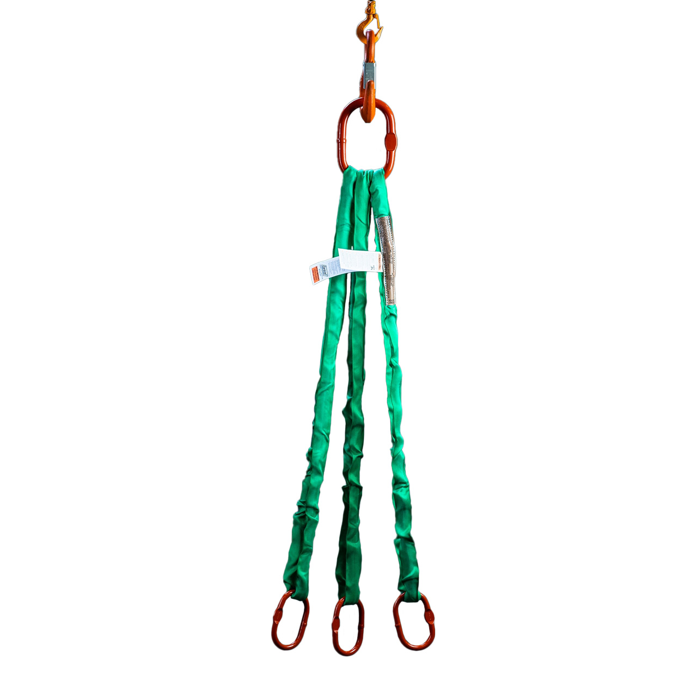
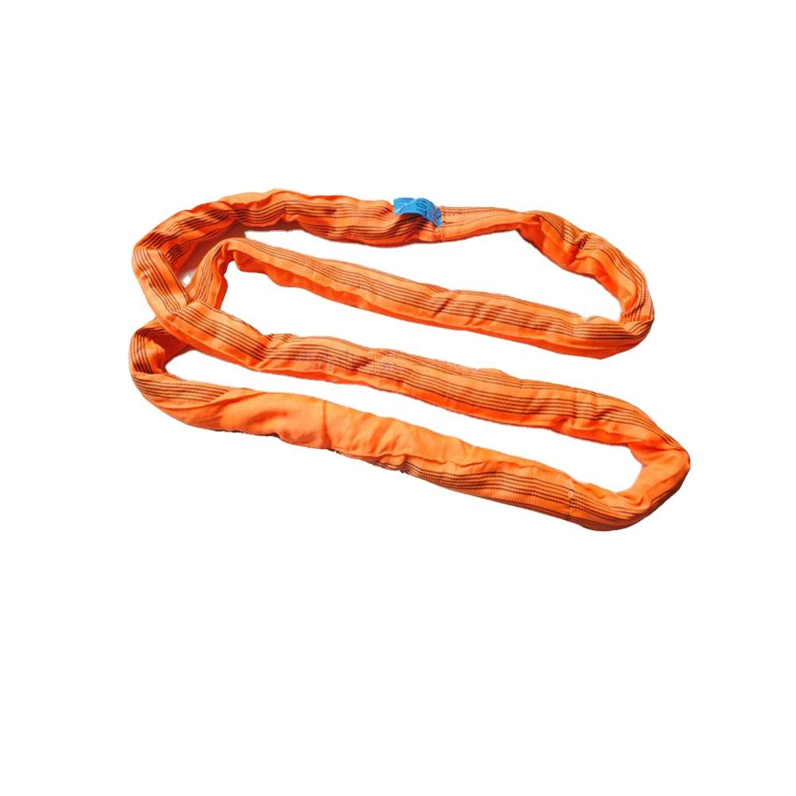

Reliable, Lightweight and High-Strength Polyester Webbing Slings for Safe Industrial Lifting & Rigging
L.R. Engineering Works manufactures and supplies high-grade Polyester Webbing Slings engineered from 100% high-tenacity industrial polyester yarns. Designed for heavy-duty lifting and material handling, our synthetic webbing slings offer an exceptional strength-to-weight ratio, remarkable flexibility, and superior load protection. They provide a secure, non-marring lifting medium that safeguards delicate, machined, painted, and polished surfaces from scratches, dents, and crushing damage.
Lightweight and easy to handle, polyester webbing slings significantly reduce rigger fatigue and improve on-site operational efficiency compared to traditional steel wire ropes and chain slings. Our slings adapt smoothly to contoured and irregular load geometries in vertical, choker, and basket hitch configurations. With high resistance to UV degradation, moisture, mildew, grease, and common industrial chemicals, our webbing slings deliver dependable lifting performance across manufacturing, infrastructure, logistics, and heavy engineering sectors.
Engineered characteristics that make polyester webbing slings ideal for critical lifting:
Versatile hitch setups and safety enhancements available across our webbing sling range:
High-performance synthetic webbing slings and protective accessories tailored to your industrial lifting requirements.







Find quick answers to common technical queries regarding polyester webbing sling specifications, lifting hitches, and safe handling.